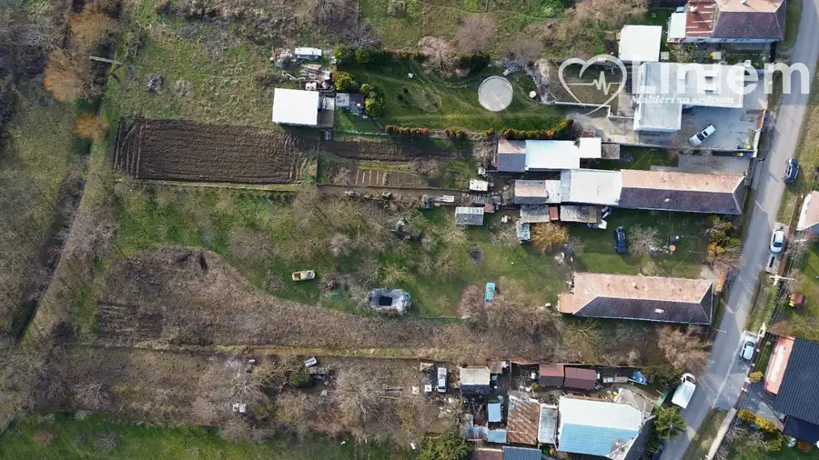
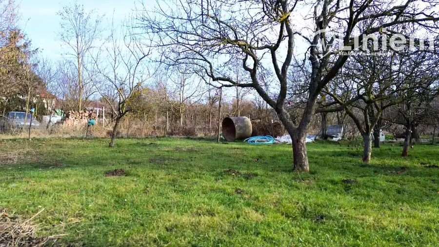
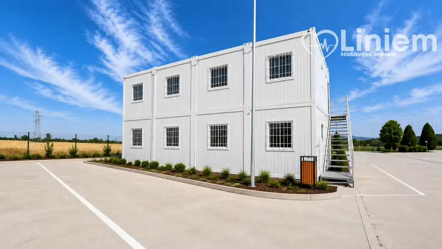
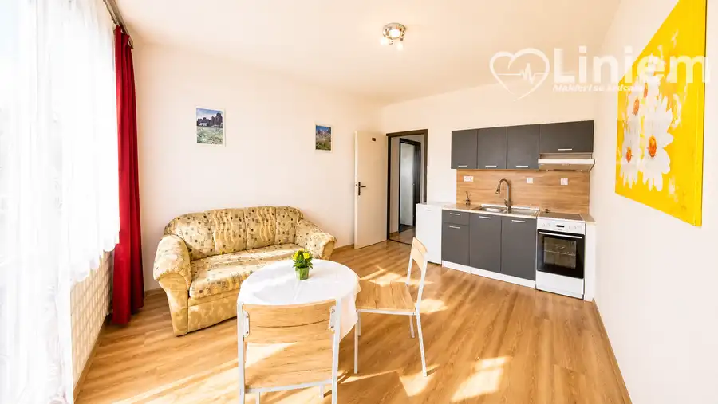
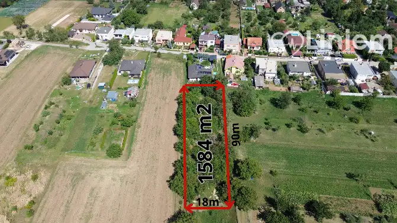

Na predaj - unikátny pozemok pre developéra aj milovníka prírody
Báb


- Plocha2878 m²
- VlastníctvoOsobné
O nehnuteľnosti
Hľadáte ideálny pozemok na výstavbu nových domov alebo snívate o vlastnej farme či rekreačnej usadlosti? Tento jedinečný pozemok v obci Báb (časť Veľký Báb) s rozlohou 2 878 m² ponúka široké možnosti využitia!Videoobhliadka: https://youtu.be/CtTUHOLq3ZkVhodný pre developera – možnosť výstavby viacerých rodinných domov.Perfektný pre farmárov – úrodná pôda, potok na zavlažovanie, ovocné stromy.Ideálny na rekreačné bývanie – starý dom na rekonštrukciu alebo odstránenie.IS na pozemku – obecná voda, plyn, elektrina (220V), vlastná studňa.Prírodný benefit – pozemkom preteká potok, ideálny na zavlažovanie.Ovocná záhrada – marhule, jablone, hrušky, čerešne, ríbezle a iné.Agátový lesík – 6 árov poskytuje príjemný tieň a súkromie.Pokojná lokalita so skvelou dostupnosťouObec Báb ponúka výbornú občiansku vybavenosť a rýchle napojenie na diaľnicu, čím je ideálnym miestom pre bývanie aj investíciu.Kontaktujte ma pre viac informácií a obhliadku:Peter Čoros RSc.0948 571 309coros@liniemreality.skNezmeškajte túto príležitosť!
Parametre
- Druh
- Pozemok pre rodinné domy
- Dátum zverejnenia
- 06. 05. 2026
- Elektrina
- Na pozemku, Na pozemku - 230 V, Na pozemku - 400 V
- Odpadové vody
- Na pozemku - Žumpa
- Plocha pozemku
- 2878 m²
- Plyn
- Na pozemku
- Typ
- Predaj
- Vlastníctvo
- Osobné
- Voda
- Na pozemku - Studňa
Kde to je


Mohlo by Vás zaujímať

Komerčné priestoryNové 1 750 €Administratívne priestory s parkovaním pre kamióny priamo pri R1 Nitra 115 m²
BytNové Cena na vyžádáníNA PRENÁJOM: 2-izbový byt v Nitre – Krškany Nitra 2-izbový38 m²4. podlažie
PozemokNové 204 000 €Na predaj veľký stavebný pozemok pre 1–4 rodinné domy – Veľké Zálužie Veľké Zálužie 1584 m²